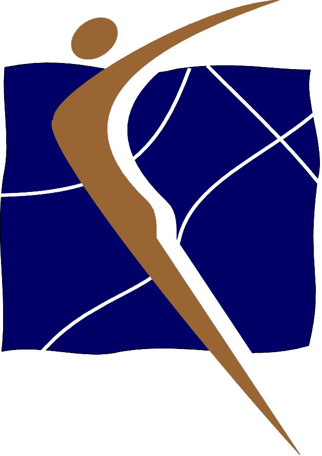

GYMNASTICS
Ontario
|
| Women's Artistic
| 
| Rhythmic Sportive
|  |
|
| Men's Artistic
| Trampoline
| |
|
| Sports Aerobics
| Tumbling
| |
General Gymnastics
GYMNASTICS
ONTARIO | | | |
About Gymnastics Ontario (GO)
GO Values and Beliefs
GO Vision
GO Mission
GO Board of Directors 1999-2000
GO Staff
Gymnastics Ontario
Value, Beliefs, Vision and Missaion
The Gymnastics Ontario is a provincially incorporated, non-profit organization,
responsible for Artistic Gymnastics, Rhythmic Sportive Gymnastics, Trampoline and Tumbling,
Sports Aerobics, and Recreational Gymnastics in Ontario. Current membership include 175
affiliated clubs and approximately 60,000 registered members.
The affairs of Gymnastics Ontario are under the direction and control of The Board of Directors.
The Board of Directors determines the policies of Gymnastics Ontario. The Committees/Sub Committees,
in partnership with the professional staff, develop, implement and manage programs and services
according to the policies set by the Board.
The Professional staff manage the day to day operation of Gymnastics Ontario.
Return to Index |
| The GO Values and Beliefs
* Ensure optimal safety in sport.
* Sport is participant oriented and athlete centered which has access to quality coaching, judging and various support services.
* The fundamental rights of the individual are recognized and protected.
* Sport includes a continuum from recreational to high performance.
* Opportunities exist for participants to move through the continuum of the sport in accordance with their abilities, skills, and desires.
* The sport system is community based.
* The sport educates and develops leader.
* The sport has a responsibility in promoting positive values and ethics including achievement,
enjoyment, equity, responsibility, cooperation, fair play, mutual respect, self esteem, etc.
Return to Index |
| The GO Vision
Gymnastics Ontario will achieve growth by:
* Providing programs and service excellence.
* Providing leading edge programs in the sport.
* Becoming financial self-sufficient.
* Offering visible vaule.
* Providing an effective infrastructure.
Return to Index |
| The GO Mission
To develop, promote and guide gymnastics as a lifetime activity in Ontario. The GO shall
provice programs, services and leadership so that all participants may safely achieve their potential. |
Return to Index
| The GO Board of Directors 1999-2000
Harold Sanin*
President
Brian McVey*
Vice President, Programs
Karen Carmichael
Treasurer
Joan Payne-Myles
Secretary
John Hummel
Club Advocate
Gretchen Kerr
Director of Ethics & Standards
Philip Bruce
Director-At-Large
Angel Crossman
Director-At-Large
Nicki Chretien Ranney
Director-At-Large
Mike Cappa
Director-At-Large
* Executive Management Committee
Jean-Paul Caron, GO. CEO is ex offcio to the Committee |
Return to Index
Return to Index
Last update August'99